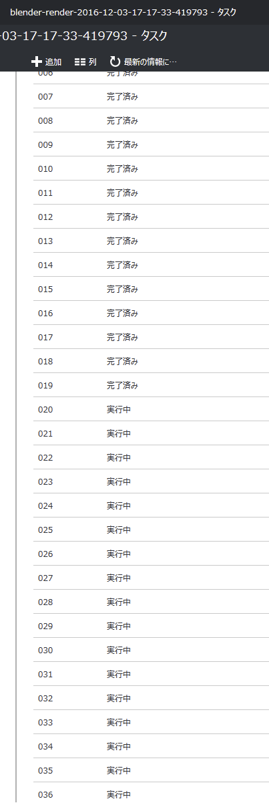
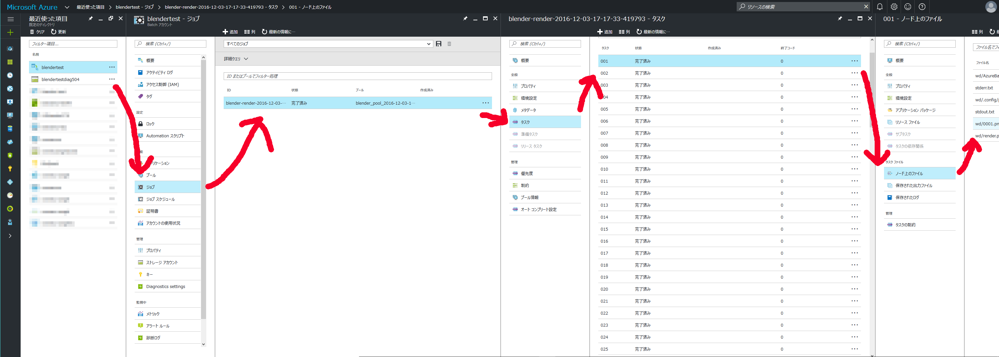

この文章はBlender Advent Calender 2016 12月3日の記事です。
こんばんは。いとすです。すっかり年も暮れて寒くなってきましたが皆さんいかがお過ごしでしょうか。 巷では課金によってイラストのみだったキャラクターが立体化されて歌って踊って城が建つそうですが、 Blenderでも課金しまくって強くなる何かがないか考えていたところ、いくつか方法があったので、 そのうちの一つMicrosoft製のBatched Blenderを使ってみた感じをシェアさせていただこうと思います。いわゆるやってみた系の記事なのでちょっとぐだってますが、適当に読み飛ばしていただければと。
年末年始の飲み会で遅れた進捗、飲み代分ぐらいの数千円を課金して取り返しませんか？という意気込みで書いてみましたが、このコード、現在進行形でガンガン更新されており、皆さんの環境で動かなかったらごめんなさい・・・。対象の読者はクラウドを使うとどんな事ができるのかなんとなく知りたい方、AzureやEC2のクラウドインスタンスを使ったことあるけど、もっとたくさんのマシンを同時に起動してもっと課金したい方を対象にしています。
この記事は下記のような構成になっています。
Blenderとクラウドサービスの連携は下記の点で非常に相性が良いと感じます。
Batched BlenderはMicrosoft社製のBlender用Addonです。Microsoft社が公式イベントでAzureBatchというサービスのデモのために作ったようです。
動画の内容を簡単に説明すると、手元のPCでレンダーさせつつ、 AzureBatchへレンダージョブを投げ、Azureポータルからファイルを取り出してその速度差を比較するというデモを行っています。37個のサーバで処理させていますが、これはレンダリングする画像は6X6の36分割され最後の1つのサーバで1枚に結合する処理をさせているとのことです。レンダリングの終了後、Azureのポータルからジョブの出力ファイルを取り出して完了しています。さて、この動画に出てくるUIですが、結構Azureの進化が速くて今のAzureと違います。さらに使ってみて分かったのですが、動画では静止画を複数台で処理して最後にステッチする手法を使っていますが、現行の開発版では挙動が変わっており、複数フレーム（アニメーション）のレンダリングのみ分散処理が働くので注意してください。
Githubにコードがあるので、そこの説明に従ってインストールします。・・・と言いたいところなのですが、どうやらAzureのアカウントにあるコードは書き直し中みたいで、Warningという文言とともにこちらのannatischさんのリポジトリへ誘導されています。いきなり穏やかじゃないですが進めましょう。上から概要・ライセンスについて・Blenderについて書かれたのち、Blender.Clientと書かれているところからセットアップについて書かれています。簡単に訳すと下記のようになります。
次にアドオンのインストールをするのですが、ここでインストール用のzipファイルを作成します。まず、Githubのプロジェクトページ右上の方にある緑のClone or downloadボタンを押し、出てくるメニューからDownloadZIPをクリックし、プロジェクトを丸ごとダウンロードします。
←このボタンそしてダウンロードしたzipファイルを解凍し、その中のazure-batch-apps-blender/Blender.Clientフォルダの中にあるbatched_blenderというフォルダを再度圧縮してzipファイルにします。これがAddonになりますので、いつも通りBlenderのAddonメニューのファイルからインストールで読み込ませてください。
さて、インストールが済んだら次はAzureに接続するための認証情報などを入力していきます。
さてさて早速submit new jobからレンダリングするフレーム数を決めて、好きなマシン数を決めてpool（バーチャルマシンの集まりみたいなもの）を作成して実行～♪と思いきやエラーを吐いてしまいます。このパネルからのpool作成がうまくいかないようで、まずはjobを作成する前にその基盤となるpoolを作成するため、ReturnHomeボタンをクリックして一旦最初の状態に戻ってください。次にPoolsメニューのCreateから好きな名前（後に出てくるプールIDではない）と使うマシン数（総CPUコア数20個の上限があるので、デフォルトで使われるマシンでは上限20台まで。もっと必要な場合はサポートへ連絡すれば可能。）を入力し、StartPoolを押して数分待ちます。マシンと言っても価格と性能がいろいろあるのですが、デフォルトではstandard_a1のマシン（1時間利用で10円ぐらいのシングルコアのマシン）が選択されるようです。しばし待ってからリフレッシュボタンを押し、プール名の横の更新中矢印アイコンが消えてチェックボックスになったらプールの作成完了です。下の方に表示されているプールIDをコピーして、submit new jobのUse Pool IDにペーストし、Submit Jobボタンを押します。Azureの管理コンソールからマシンやジョブ・タスクを監視すると良いでしょう。
↓一斉に並列で処理される様は壮観です

core i7 860(4コア8スレッド)のマシンで24分かかったレンダリングが、19分で完了しました。1コアのマシンとは言え、20台も集まるとそれなりのパワーになりますね。
Management Portalボタンを押すとAzureの管理画面がデフォルトのブラウザで開きます。下図のように（ちょっと見切れてますが）バッチ→ジョブ→タスク→ノード上のファイルとたどると、見覚えのあるファイル名があるはずなので、そこから画像をダウンロードします。Addonにアニメーションを束ねるような旨のチェックボックスがありますが、チェックするとエラーが出てしまいます。今のところノード単位にアクセスして集めるしかないようで、アニメーションのフレーム数が多いと大変ですね・・・。取り出し終わったらBlenderに戻ってPoolsパネルから不要になったpoolを削除しましょう。Jobが終わってもPoolが生きていると課金されるので注意してください。
Blenderとクラウドの親和性と、AzureBatchを利用したAddon、BatchedBlenderについて紹介させていただきました。あんな大きな会場でBlenderを使ったデモが行われていたなんてちょっと嬉しいですね。実際Addonの出来も最初こそワーニングが書いてあってビビりましたが、コードを自分の環境向けに修正する必要もなく、割とすんなり動きました。プールやジョブの作成や削除で行ったり来たりしても落ちずにそこそこ使えるなという感じです。実は当初AWSを使ったBrendaというクラウドオーケストレーションツールについて書こうと思っていたのですが、あちらは少しコードの修正が必要でした。ジョブをAzureへ渡す時、プールIDさえ分かればよいので、自前で強力なプールを作成してそのIDを渡して使えば頼もしいツールになると思います。アニメーションの結合でのエラーやレンダ済ファイルの収集など、まだ未完成な部分もありますが、何せソースが公開されているので、これから直せそうなところはPullRequest出してみようかなぁと思います。
Azure上の料金表示ではマシンを１か月借りた時の値段が書いてあり、何万何十万という価格が表示されてビビりますが、実は1時間単位にするとそうでもなく、最強マシン（24コア48スレッド・TeslaK80ｘ4枚刺し＝19968cudaコアでPascal世代のTitanX1枚分の5.6倍・メモリ224GBのモンスターマシン）のNCシリーズでも現時点で約259円です。これだけ強力なマシンなら1時間もあれば大抵のシーンをレンダリングできると思いますが、8時間ブン回しても2072円です。実際にはファイル転送量なども加算されますが、2500円もあればお釣りが来るでしょう。軽くお酒を飲んで食事するぐらいです。年末年始、ポンポン飲み会行き過ぎて進捗遅れ気味だなぁ・・・って時、勉強会や打ち合わせに軽量ノートPCしか持ってないのに急に重たいシーンをレンダリングしてみせなきゃいけない時も安心ですね。
なお強力なマシンを1台使うだけなら今回の記事のような仕組みは不要で、リモートデスクトップを使った事がある方ならすぐにパワフルなマシン環境をレンタカーのように借りることができます。また、AWSと違ってAzureなら無料枠を使い切ってしまってもシステムが止まるだけで意図せぬ課金は生まれないようになっているのと、AWSが時間単位課金なのに対してAzureは分単位課金なので、ちょっとマシンを上げて落としてしても急に値段が膨れ上がったりしませんので入門者におススメです。まだクラウドサービスを使ったことない方も触ってみてはいかがでしょうか？
Blender Advent Calender 2016 明日の記事は@wlk_yosさんによる「Blender + ○○ でゲームを何度か作るおはなし」です。どうぞお楽しみに！
すぺしゃるさんくす！
@MayoToya